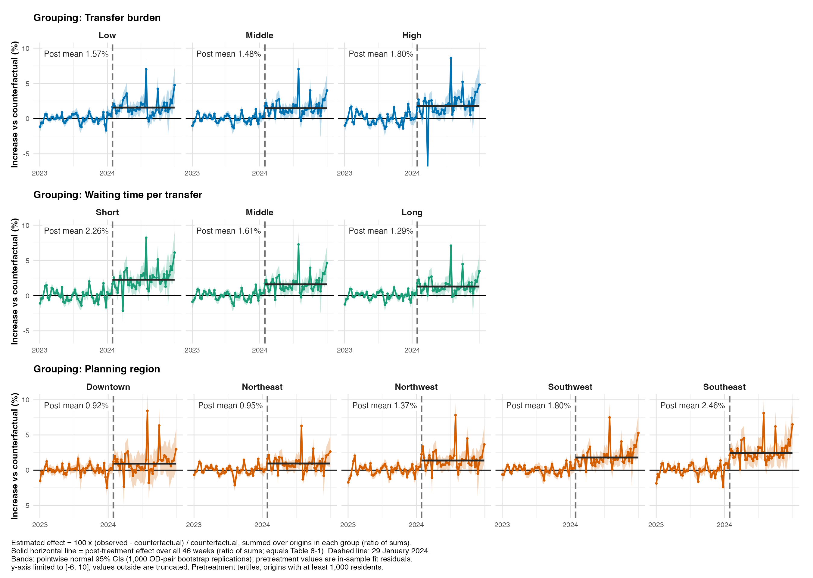
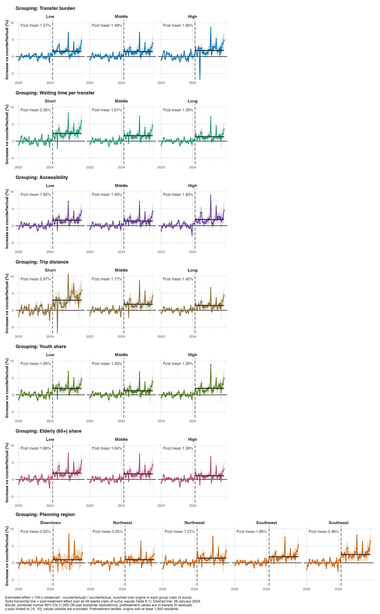
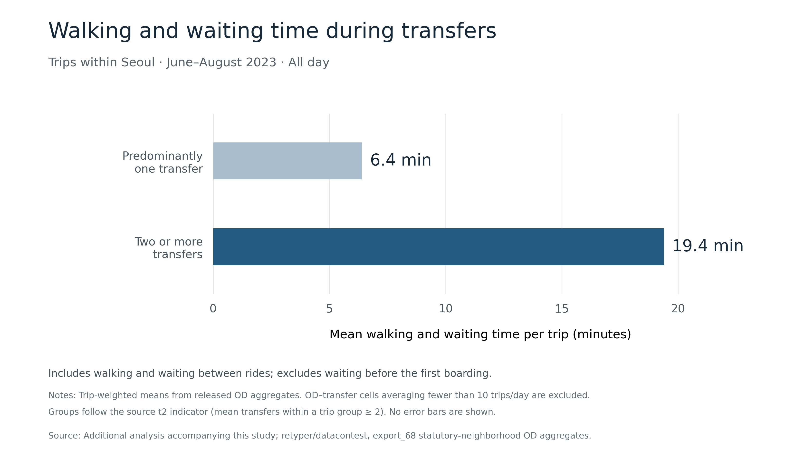

② 효과 이질성② Effect heterogeneity
①의 전체 모형 적합값을 그대로 두고, 출발지 특성별 3분위 집단마다 반사실 대비 효과율을 다시 집계했습니다. 집단별 재추정은 하지 않았고, 분위 경계는 추정 효과를 보지 않고 정했습니다.Using the full-model fit from ①, the counterfactual-relative effect is re-aggregated within tertiles of origin characteristics. No subgroup refits; thresholds were fixed without looking at estimated effects.
- 효과율 = 100 × Σ격차 / Σ반사실 (집단 내 합의 비율). 쌍체 부트스트랩 1,000회, 정규근사 95% CI, p값 다중비교 미보정.Effect = 100 × Σgap / Σcounterfactual within group; 1,000 paired bootstrap draws; normal 95% CI; unadjusted p-values.
- 대기 시간: 2023년 6–8월 환승 보행+대기(최초 승차 대기 제외). 인구 1,000명 이상 출발지.Waiting time: June–Aug 2023 transfer walking + waiting (first boarding wait excluded). Origins with population ≥ 1,000.
- 기술적 이질성이며 특성 자체의 인과효과가 아닙니다.Descriptive heterogeneity, not causal effects of the characteristics.
3분위 집단별 효과 (46주 전체)Effects by tertile (full 46 weeks)
| 특성Characteristic | Q1 | Q2 | Q3 | Q3−Q1 (%p)Q3−Q1 (pp) | 95% CI | p |
|---|---|---|---|---|---|---|
| 환승 부담Transfer burden | 1.57 | 1.48 | 1.80 | +0.23 | −0.55 – 1.02 | .56 |
| 대기 시간Waiting time | 2.26 | 1.61 | 1.29 | −0.97 | −1.75 – −0.19 | .015 |
| 접근성Accessibility | 1.62 | 1.40 | 1.83 | +0.21 | −0.54 – 0.95 | .58 |
| 통행 거리Trip distance | 2.97 | 1.77 | 1.42 | −1.55 | −2.59 – −0.51 | .003 |
| 청년 비율Youth share | 1.90 | 1.20 | 1.92 | +0.03 | −0.77 – 0.83 | .95 |
| 고령 비율Elderly share | 1.86 | 1.64 | 1.09 | −0.77 | −1.49 – −0.05 | .035 |
출처Source: …/R2_r4_cf_tertiles_timepath_20261103/group_cf_pct.csv, contrast_cf_pct.csv (window = full). 단위 %.Values in %.
시간에 따른 변화Change over time
환승 부담 상위 집단의 효과는 시간이 지나며 커졌습니다: (후기 − 초기) Q3−Q1 차이 +1.37%p (95% CI 0.76 – 1.98). 통행 거리는 반대로 −1.83%p.For high transfer burden the effect grew over time: late-minus-early Q3−Q1 difference +1.37 pp (95% CI 0.76–1.98). For trip distance it was −1.83 pp.
환승 × 대기 교차Transfer × waiting
교차항(높은 환승에서의 대기 차이 − 낮은 환승에서의 대기 차이)은 −1.07%p (95% CI −4.06 – 1.92)로 유의하지 않습니다.The interaction (wait gap within high transfer minus within low transfer) is −1.07 pp (95% CI −4.06–1.92), not significant. 표table
주별 효과 (반사실 대비 증가율)Weekly effects (increase vs counterfactual)



그림 자료Figure data: …/R2_r4_cf_tertiles_timepath_20261103/fig_hetero_weekly_cf_all_en_data.csv
이전 세대 그림(주민 1,000명당 지표, 그림 6-1~6-3)은 그림 갤러리에 참고용으로 남아 있습니다.Earlier-generation figures (per-1,000-residents indicator, Figs 6-1 to 6-3) remain in the gallery for reference.
5분위 민감도 결과: Quintile sensitivity: R2_r4_cf_quintiles_20261103/
코드Code
code/02_heterogeneity/ — ①의 적합 객체와 부트스트랩 결과 필요(일부 아직 미업로드).needs the fit and bootstrap draws from ① (some not uploaded yet).